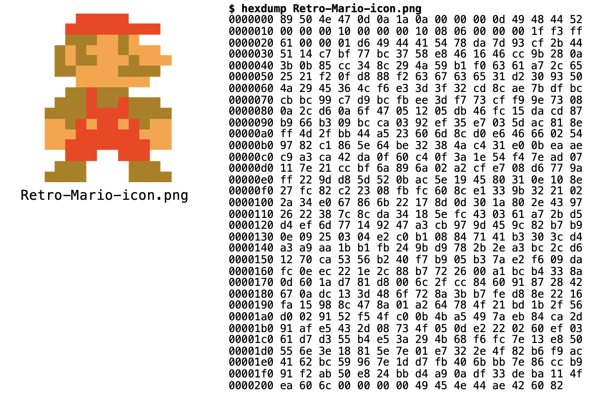

10. Arquivos
Nossos programas até o momento utilizam dados fornecidos pelo usuário ou obtidos a partir de algum cálculo, mas esses dados são perdidos assim que o programa acaba. Arquivos são estruturas de dados que normalmente são armazenados em dispositivos secundários de memória. Esses dispositivos secundários de memória permitem o armazenamento permanente dos dados, ou seja, mesmo depois que o programa acaba ou até depois que o computador é reiniciado, os dados continuam existindo. Os principais dispositivos de armazenamento atualmente são:
- Disco Rígido (HD)
- Solid-State Drive (SSD)
- Pen Drives
Os arquivos armazenados nestes dispositivos possuem sempre uma identificação (nome) e sua localização (normalmente em uma estrutura hierárquica de diretórios). Outros atributos como data e permissões de acesso também são normalmente usados no índice.
Acessando arquivos
Arquivos são lidos como uma sequência de bytes. Um byte é um conjunto de 8 bits (BInary digiT), que são valores do tipo 0 ou 1. Bytes por si só não possuem significado nenhum, são simplesmente uma sequência de 0s e 1s. É necessário que um programa seja capaz de entender essa sequência de bytes do arquivo para extrair alguma informação.
Existem basicamente dois tipos de arquivos:
- Arquivos de texto: os bytes representam caracteres. Por exemplo, os arquivos
.pyque criamos com o nosso código Python são arquivos de texto. Cada caractere do nosso código Python (incluindo espaços e pula linha) é representado por um byte e armazenado no nosso HD ou SSD. - Arquivos binários: cada byte pode ter um significado diferente. Por exemplo, em imagens é comum usar bytes para representar cores. No exemplo abaixo, os bytes do arquivo (à direita) são interpretados por um programa que é capaz de mostrar o resultado como uma imagem (à esquerda)

Neste handout vamos aprender a trabalhar com arquivos em Python. Ao final do handout você deve ser capaz de abrir um arquivo para (1) ler os dados armazenados; ou (2) escrever dados.
Arquivos em Python
Antes de utilizar qualquer arquivo é necessário abri-lo. Para isso, existe a função open(), que recebe pelo menos dois argumentos: a localização do arquivo e o modo de abertura. Depois de utilizar o arquivo é muito importante lembrar de fechá-lo. Muitos problemas podem acontecer se você esquecer de fechar o programa. Para isso devemos usar a função close():
# Modo tradicional de ler um arquivo
arquivo = open('arquivo_texto.txt', 'r')
conteudo = arquivo.read()
arquivo.close() # O que acontece se não fechar?
# Imprime o conteúdo
print(conteudo)
O programa acima abre um arquivo chamado arquivo_texto.txt para leitura (importante: ele deve existir na mesma pasta onde você está executando o seu programa), armazena o conteúdo na variável conteudo, fecha o arquivo e depois imprime todo o conteúdo do arquivo.
EXERCÍCIO 1
Caminho (path) do arquivo
Quando estamos trabalhando com arquivos é comum obtermos o erro FileNotFoundError. Ele ocorre quando tentamos abrir (open()) um arquivo que não existe. É importante que o arquivo que você está tentando abrir esteja na mesma pasta que contém o seu programa.
É possível abrir arquivos localizados em outras pastas do seu computador, mas nesse caso é necessário especificar o caminho do arquivo, ou seja, qual é a sequência de pastas que devem ser percorridas para se localizar esse arquivo.
Abrindo arquivos com o with
Como dissemos anteriormente, é muito importante se lembrar de fechar o arquivo depois de utilizá-lo. Na verdade, isso é tão importante que existe uma maneira de escrevermos um código que fecha o arquivo automaticamente depois que terminamos de utilizá-lo:
A sintaxe do código acima é um pouco diferente, então vamos por partes. O with define um bloco dentro do qual o arquivo será utilizado. Assim que o bloco termina, o que é indicado pelo fim da indentação, o arquivo será automaticamente fechado. A função open() não foi alterada, mas agora ao invés de arquivo = open('arquivo_texto.txt', 'r') nós temos open('arquivo_texto.txt', 'r') as arquivo. O resultado será o mesmo: o arquivo aberto será armazenado na variável arquivo. Essa inversão da ordem é feita apenas em conjunto com o with.
EXERCÍCIO 2
Modos de abertura de um arquivo
Comentamos que existem dois tipos de arquivo: arquivos binários e arquivos de texto. Nos exemplos acima nós trabalhamos com a leitura de um arquivo de texto. Para isso o modo de abertura do arquivo foi o 'r', ou seja, leitura (read). Para abrir um arquivo binário para leitura devemos utilizar o modo 'rb' (read binary). Tanto o modo 'r' quanto o modo 'rb' permitem apenas a leitura de um arquivo existente. Não é possível adicionar (escrever) nenhuma informação a ele.
Para adicionar dados a um arquivo devemos abri-lo com algum dos modos de escrita. Os modos disponíveis são 'w' e 'a'. O modo 'w' cria um novo arquivo no modo escrita (write). Importante: se já existir um arquivo com o mesmo nome ele apaga o antigo. O modo 'a' (append) é um modo de escrita alternativo que adiciona o novo conteúdo ao final do arquivo se ele já existir, sem apagar o conteúdo anterior. Exemplos:
A seguir apresentamos um resumo dos principais modos de abertura de arquivos (para mais detalhes consulte a documentação):
'r': modo de leitura de arquivo texto;'rb': modo de leitura de arquivo binário;'w': modo de escrita de arquivo texto;'wb': modo de escrita de arquivo binário;'a': modo de escrita de arquivo texto, sem apagar o conteúdo anterior;'ab': modo de escrita de arquivo binário, sem apagar o conteúdo anterior.
EXERCÍCIO 3
EXERCÍCIO 4
Resumo dos métodos de arquivos:
Abaixo você encontra um resumo dos principais métodos de arquivos. Para mais detalhes, consulte a documentação.
Para arquivos abertos no modo de leitura
read: retorna todo o conteúdo do arquivo em uma única string;readline: retorna uma string contendo apenas a próxima linha;readlines: retorna uma lista de strings, contendo uma string para cada linha.
Para arquivos abertos no modo de escrita
write: escreve no arquivo a string passada como argumento;writelines: recebe uma lista de strings e escreve todas no arquivo.
EXERCÍCIO 5
EXERCÍCIO 6
O formato JSON
O formato JSON é uma forma de trocar informação de modo estruturado, simples e rápido entre sistemas. Ele é muito parecido com um dicionário do Python, contudo o JSON é um texto (string) e não uma estrutura de dados. Por ser um texto, ele pode ser armazenado em um arquivo. Assim esses dados continuam existindo, mesmo depois que o programa termina. Exemplo:
{"Alunos":[
{ "nome": "João", "notas": [ 8, 9, 5 ] },
{ "nome": "Maria", "notas": [ 8, 10, 7 ] },
{ "nome": "José", "notas": [ 10, 10, 9 ] }
]}
O JSON acima contém os nomes e notas de 3 alunos. Esse poderia ser o conteúdo de um arquivo de texto chamado, por exemplo, alunos.json. Para utilizar os dados presentes nele será necessário processar a string JSON para obter um dicionário. Para isso utilizamos o módulo json do Python:
EXERCÍCIO 7
EXERCÍCIO 8